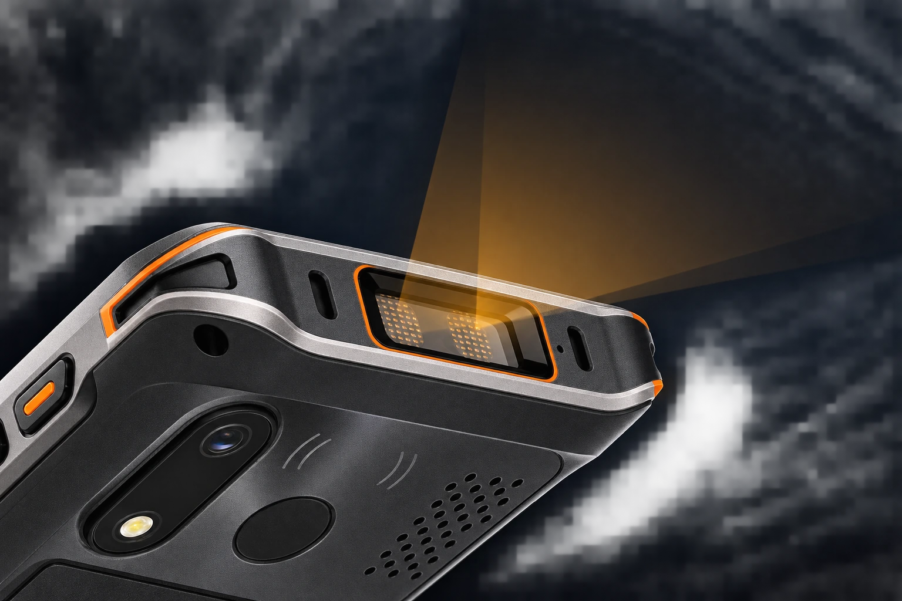
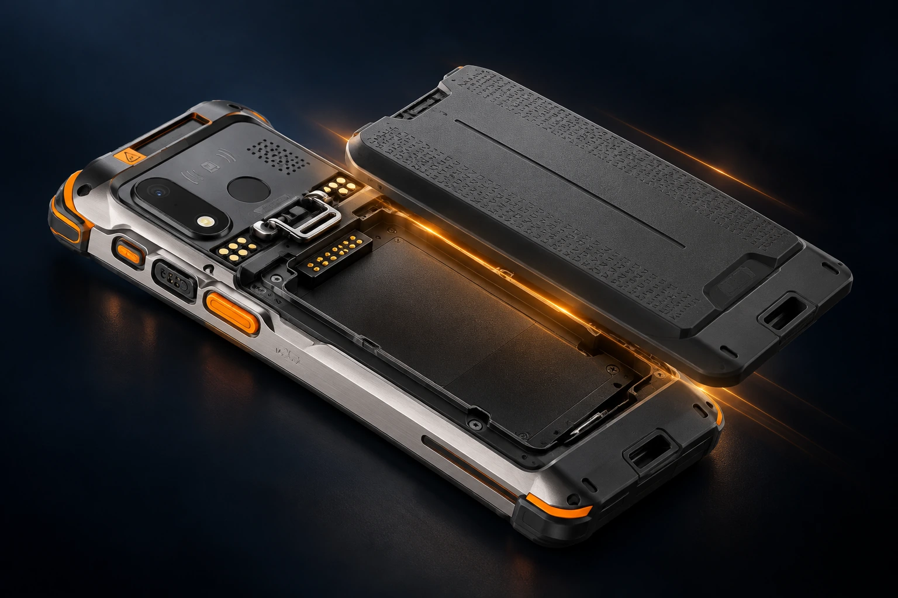
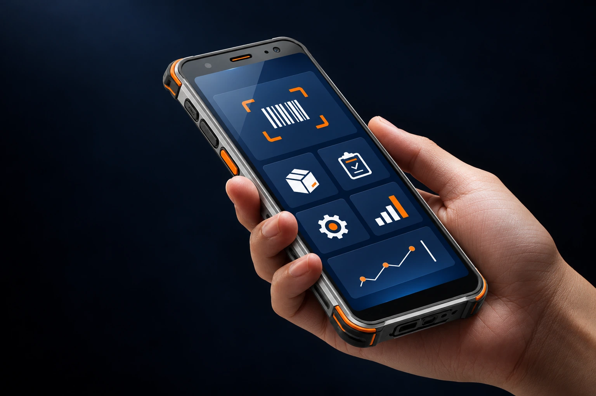
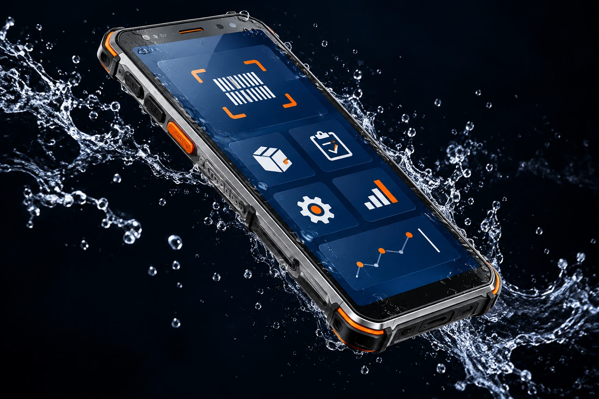

高通旗舰平台
多任务运行，业务响应更从容。
围绕一线业务的每一步，打造高效、可靠的移动作业体验。
多任务运行，业务响应更从容。
面向复杂条码，提升识读效率。
快速补电，支持连续班次作业。
清晰呈现任务、图像与业务信息。
移动数据与现场任务及时同步。
防尘防水，应对工业现场挑战。
Qualcomm QCM6490 平台搭配大容量内存，为图像处理、多应用切换与企业业务系统提供充足性能。以 Android 14 为基础，方便应用部署与项目适配。
专业二维扫描方案，面向一维码、二维码、屏幕码及污损、低对比度条码，助力入库、分拣、复核与追溯。侧面扫码键触手可及，连续采集更顺手。

5000mAh 大容量电池，结合热插拔与快充方案，为多班次工作提供持续动力。可拆卸电池便于现场更换与集中管理，减少等待，让作业节奏保持连贯。

6.0 英寸 FHD+ 高亮屏，让任务清单、识读结果与业务图像清晰呈现。全触屏交互搭配易握机身，在有限的掌间空间里，获得宽阔而直观的操作体验。

IP68 防尘防水与 1.5 米跌落建议方案，面向粉尘、泼溅和频繁搬运环境。加固边角与防滑纹理，兼顾可靠防护与日常握持，让设备更适合高强度移动现场。

从数据传输到近场交互，为移动业务构建完整的连接能力。
面向园区与移动现场，快速传输订单、图像和业务数据。
便于连接外设与开展近场交互，拓展现场工作流程。
石墨灰搭配钛银与醒目橙色按键，坚固机身也有鲜明识别度。
围绕物流、制造与医疗的实际流程，让数据在现场高效流转。
入库、分拣、复核与配送，完成每一次货品流转。
工序采集、质量追溯与物料管理，连接产线关键节点。
身份核验、样本追踪与物资管理，减少重复录入。
按业务需求选择配置，详细方案欢迎与我们沟通。
以上为建议配置，具体参数可能因项目需求及产品版本调整，请以最终规格书为准。
与我们沟通扫描引擎、网络连接、供电方式与系统适配需求。